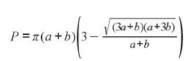
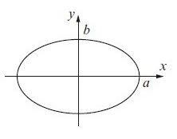

EJERCICIOS EN JAVASCRIPT
EJERCICIO 11
EJERCICIO 12
EJERCICIO 21
EJERCICIO 32
EJERCICIO 31
21. El perímetro de una elipse se puede aproximar por: P = pi(a+b)[3- √(3a+b)(a+3b)/ a+b] Calcula el perímetro de una elipse con a= 18 pulg. y b = 7 pulg.


Calcular el perimetro:
perimetro
Respuesta